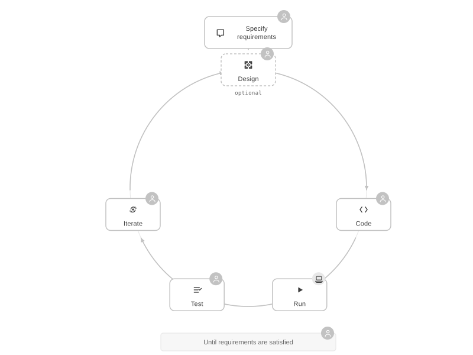
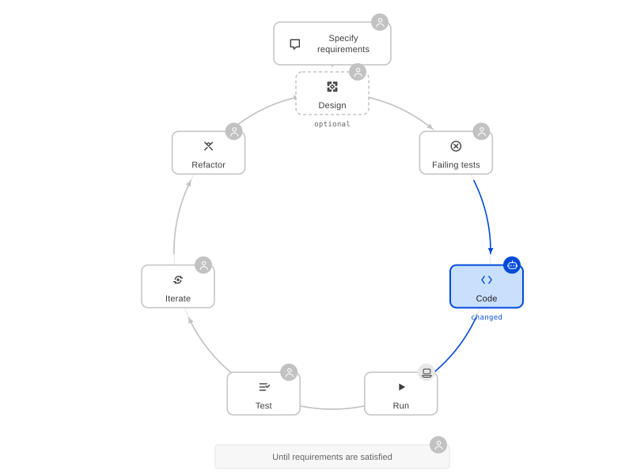
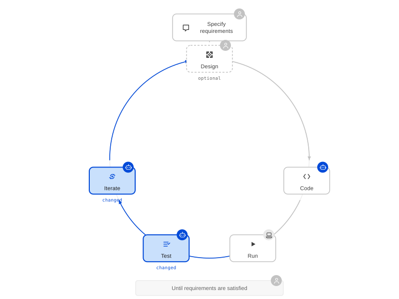
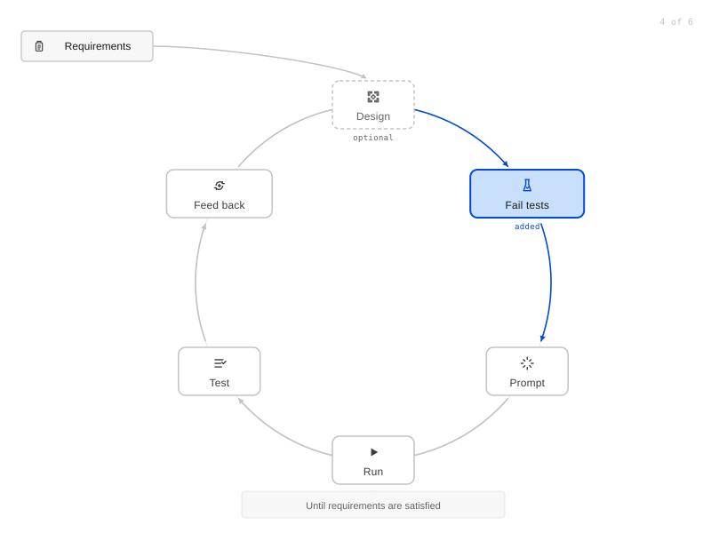
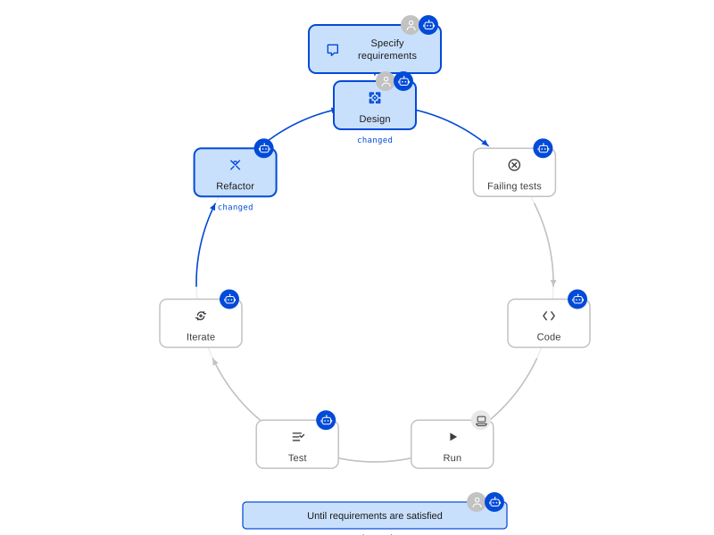
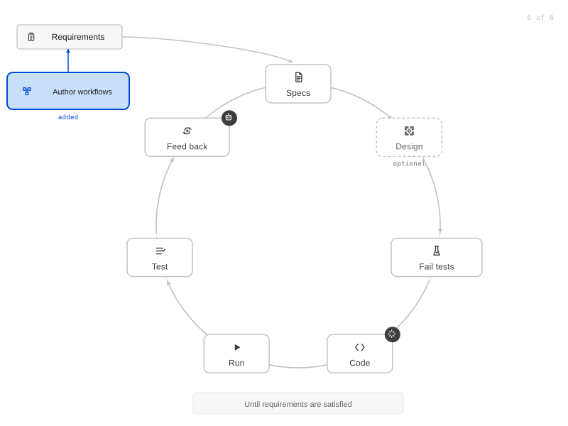

Requirements
Gather what is needed, refine it into structured requirements, trim it to one slice.
Galileo Sánchez
The development loop as a feedback loop for AI, and how to find the right abstractions to build reusable workflows.
Contents
On AI Assisted Coding
Temperature Check
How much of the loop you hand over.
| Manual | 1 | Code completion | Press tab to accept the suggested lines. |
| 2 | Comments to code | Write a comment describing the intent and the model writes the body. | |
| 3 | Chat and copy code | You paste the answer into the file yourself. | |
| Agentic | 4 | In file changes | The agent edits the files and you review the diff. |
| 5 | Spec driven | The agent works from a plan you approved first. | |
| 6 | Vibe coding | You accept the output without reading the diff. | |
| Harness Engineering | 7 | Pre-built frameworks | Adopt a published workflow such as spec-kit or conductor. |
| 8 | In house workflows | You author the loop the agent runs. |
On AI Assisted Coding
Part 1
On AI Assisted Coding
On AI Assisted Coding

Level 0
Author project workflowsadded
Specify requirements
Until requirements are satisfied
On AI Assisted Coding

Level 1
Author project workflowsadded
Specify requirements
Until requirements are satisfied
On AI Assisted Coding

Level 2
Author project workflowsadded
Specify requirements
Until requirements are satisfied
On AI Assisted Coding

Level 3
Author project workflowsadded
Specify requirements
Until requirements are satisfied
On AI Assisted Coding

Level 4
Author project workflowsadded
Specify requirementschanged
Until requirements are satisfiedchanged
On AI Assisted Coding

Level 5
Author project workflowsadded
Specify requirements
Until requirements are satisfied
On AI Assisted Coding
Part 2
On AI Assisted Coding
Encode what you do in prompts, then iterate automatically
Workflows
A predefined set of steps to follow during implementation.
Gather what is needed, refine it into structured requirements, trim it to one slice.
Design the change, plan the tests, then sequence the code against them.
The loop the agent runs: tests, code, refactor, review, validate, merge.
On AI Assisted Coding
Workflows
Goal: clear requirements, functional and non functional.
| Step | What it covers |
|---|---|
| Gather | Let the agent act as a PM and drill you one question at a time, prodding for edge cases. |
| Refine tickets | Turn the raw requirements into structured ones using User Stories, EARS and Gherkin. |
| Scope trimming | Run INVEST over the user stories to isolate one vertical slice, then rebuild the requirements around it. |
| Narrative optional | Write the spec so a less technical audience can review it. |
On AI Assisted Coding
Workflows
Goal: steps the agent can run unattended, with checkpoints to validate progress.
| Step | What it covers |
|---|---|
| Technical design | Feed the agent the requirements and repo access to produce an outline of the code changes. |
| Testing plan | Plan the tests that verify the work against the requirements. |
| Implementation plan | Sequence the code changes, verified against the tests. |
| Testing tiers review | Check both plans for a better distribution of tests, following company policy. |
On AI Assisted Coding
Workflows
Goal: working code that satisfies the requirements.
| Step | What it covers |
|---|---|
| Code | Implement the tests, implement the code for those tests, then refactor keeping the tests green. |
| Review | Get another model's input, and iterate the implementation loop. |
| Validation | Run the end to end validation steps, then iterate or submit proof of the work done. |
| Drift check | Review code, requirements and checks, and ensure the triplet aligns. |
| All green | Merge. |
On AI Assisted Coding
If the requirements were too ambiguous, or scope creep was introduced into the loop or implied in the original spec.
On AI Assisted Coding
Demo
| Phase | Command | Leaves behind |
|---|---|---|
| 01 | Drill | A spec — the questions asked, the answers given |
| 02 | Prototype | A clickable screen, before any code exists |
| 03 | Refine | The spec again, every assumption checked against the source |
| 04 | Implement | A branch, failing tests first, then a pull request |
| 05 | QA | A report, posted to that pull request |
QA is not allowed to read the code it is checking.
On AI Assisted Coding
Demo
On AI Assisted Coding
That is why each phase leaves something behind.
On AI Assisted Coding
Workflows
Not everything needs to be fixed the same way.
Preferences on particular steps differ between people.
And between the projects they are applied to.
On AI Assisted Coding
Part 3
On AI Assisted Coding
Cool Tricks
| Trick | What it covers |
|---|---|
| During incidents | Connect the agent to live logs alongside the repo to triage likely root causes. |
| Post mortems | Have the agent generate monitoring dashboards for what the incident exposed. |
| Infrastructure as code | Point the implementation workflow at Terraform or CDK instead of service code. |
| Load testing | Have the agent load test the service, then improve and revalidate against the results. |
| Isolated worktrees | Develop features in parallel, with an isolated stack per worktree. |
On AI Assisted Coding
References
| Project | What it is |
|---|---|
| spec-kitgithub.com/github/spec-kit | A reusable spec driven framework. |
| conductorgithub.com/gemini-cli-extensions/conductor | The same, packaged as a Gemini CLI extension. |
| groundcrewgithub.com/ClipboardHealth/groundcrew | A task list monitor that dispatches CLI agents with refined tickets for autonomous execution. |
On AI Assisted Coding
The best way to learn these systems is trying, failing and learning. There is no right way to do it, but there are many ways to have fun and keep learning.
On AI Assisted Coding
On AI Assisted Coding
Galileo Sánchez